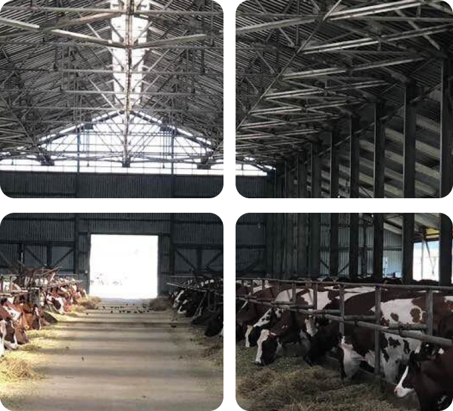
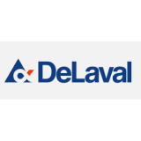
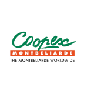

Зараз будується новий корівник на 1100 голів та доїльний зал компанії DeLaval на 48 місць. Після цього плануємо створювати два племінних репродуктори і будувати ще один потужний корівник. Також підприємство займається заготівлею кормів: силос, люцерна. Напрямок молочного тваринництва в Україні не дуже розвинений, але він має велику перспективу – про що говорить дефіцит якісного молока в Україні.
Молочне тваринництво
Група компаній СТОВ “Інтер” виробляє та реалізує молоко екстра класу (молоко найвищої якості та чистоти), що є конкурентним як на внутрішніх, так і на зовнішних ринках. До підприємств, що займаються тваринництвом, відноситься підприємство в Ічні, яке влилося в компанію "Інтер", та "Нива-Плюс" в Іваниці, що належить до ТОВ "Аграрна компанія "Нива-Плюс".

Дійне стадо корів
1500
Середні надої з 1 корови день
30-33 л
СТОВ "Інтер"
м. Ічня
- 1050 голів
- 500 дійних корів
- 150 телиць власної репродукції французького походження
Порода
Монбельярд, Франція
Порода
Симентал, Швейцарія
ТОВ "Аграрна компанія "Нива-Плюс"
м. Іваниці
- 1750 голів
- 1000 дійних корів
Порода
Голштин, Шейцарія
Селекційна робота
Ми давно й плідно співпрацюємо з представниками французької компанії "Купекс Монбельярд". Вони дають нам поради, консультують, ми отримуємо від них матеріал для запліднення тварин. Також підтримує нас Інститут розведення і генетики тварин НААН. Їхні спеціалісти допомагають у селекційній роботі, підказують, у якому напрямкові рухатися.
-
Якість
В основні вирощування ВРХ лежить політика біологічної безпеки та абсолютний контроль якості. Для цього була покращена технологія утримання відповідного до вимог окремих груп з урахуванням їх специфіки під час годівлі.
-
Запліднення
У галузі застосовується штучне запліднення телиці та корів, тому збільшення поголівʼя здійснюється за рахунок власного відтворення
-
119%
Склав приріст в порівнянні з 2016 роком
Розвиток і інвестиції
У сезоні 2024 закінчується модернізація і реконструкція молочної ферми, в яку було проінвестовано більше 80 млн гривень. Очікуємо на введення в експлуатацію нового доїльного комплексу на 1500 голів дійного стада, з європейським обладнанням DeLaval.
Партнери
Підприємство співпрацює з європейськими постачальниками обладнання та технологій, що дає змогу виробляти якісне молоко екстра класу.


Новини
Новини
Вирощування та збирання урожаю

Фермер
Сучасні технології підвищують врожайність пшениці

Техніка
Що революціонізували сільське господарство